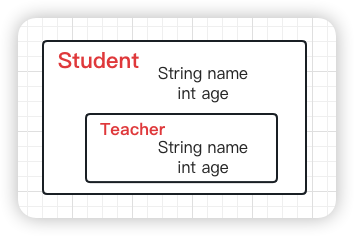
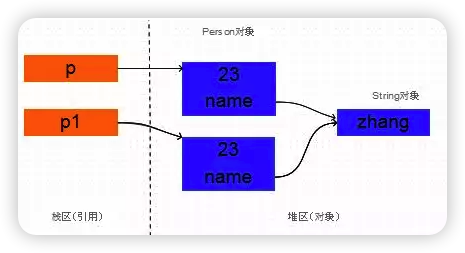
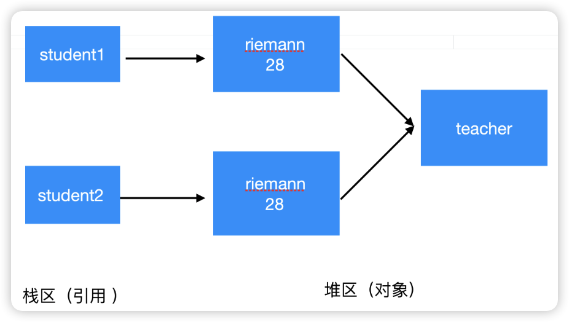
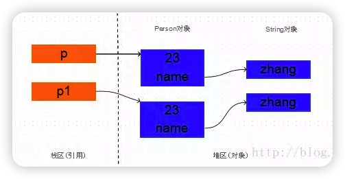
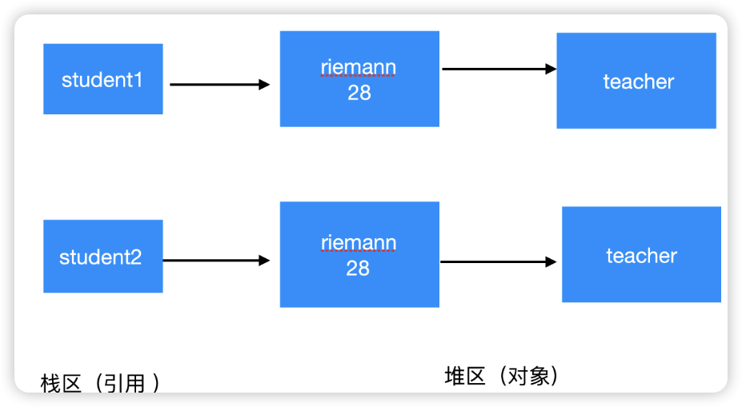

Java的深浅拷贝
今天在刷算法题的时候忘记了引用数据类型深浅拷贝的问题，正好借此机会来复习一下。
拷贝的分类
引用拷贝
没有创建新的内存空间，只是复制了一个引用变量指向了堆空间中相同的地址。
对象拷贝
创建对象的一个副本，创建了新的对象指向不同的地址空间。而深浅拷贝的区别在于对象里面的属性拷贝方式。
浅拷贝
属性就是引用拷贝，指向同一地址。
深拷贝
属性也是对象拷贝，不是同一地址。
引用拷贝
1 | Teacher teacher = new Teacher("riemann", 28); |
它们的地址值是相同的，teacher和otherTeacher只是引用而已，他们都指向了一个相同的对象Teacher(“riemann”,28)。
对象拷贝
1 | Teacher teacher = new Teacher("riemann", 28); |
它们的地址是不同的，也就是说创建了新的对象， 而不是把原对象的地址赋给了一个新的引用变量，这就叫做对象拷贝。
由于age是基本数据类型， 那么对它的拷贝没有什么疑议，直接将一个4字节的整数值拷贝过来就行。但是name是String类型的， 它只是一个引用， 指向一个真正的String对象，那么对它的拷贝有两种方式将对象拷贝分为了浅拷贝和深拷贝。
- 直接将源对象中的
name的引用值拷贝给新对象的name字段； - 根据
原Person对象中的name指向的字符串对象创建一个新的相同的字符串对象，将这个新字符串对象的引用赋给新拷贝的Person对象的name字段。
Student类和Teacher类的pojo结构是这样的：

浅拷贝
被复制对象的所有变量都含有与原来的对象相同的值，而所有的对其他对象的引用仍然指向原来的对象。即对象的浅拷贝会对“主”对象进行拷贝，但不会复制主对象里面的对象。”里面的对象“会在原来的对象和它的副本之间共享。

无论是String对象还是pojo对象，它们都是引用数据类型：
1 | Student student2 = (Student) student1.clone(); |
由于Object类本身没有实现
Cloneable接口，所以要使用clone方法必须在pojo类上实现该接口。
两个引用student1和student2指向不同的两个对象，但是两个引用student1和student2中的teacher引用指向的是同一个对象，所以说明是浅拷贝。
Cloneable接口中的clone()方法是浅拷贝的：
1 | public Object clone() throws CloneNotSupportedException { |
深拷贝
深拷贝是一个整个独立的对象拷贝，深拷贝会拷贝所有的属性，并拷贝属性指向的动态分配的内存。当对象和它所引用的对象一起拷贝时即发生深拷贝。简而言之，深拷贝把要复制的对象所引用的对象都复制了一遍。

无论是String对象还是pojo对象，它们都是引用数据类型：
1 | Student student2 = (Student) student1.clone(); |
两个引用student1和student2指向不同的两个对象，两个引用student1和student2中的两个teacher引用指向的是两个对象。对student1中的teacher属性的修改只能影响student1对象，所以说是深拷贝。
1 | public Object clone() throws CloneNotSupportedException { |
String
讲到对象的拷贝，突然想到字符串，字符串也是一种引用数据类型，这在初学中是容易被忽视掉的。
String字符串的基本特性
- String声明为
final的，不可被继承、不可变特性； - String实现了
Serializable接口：表示字符串是支持序列化的；实现了Comparable接口：表示String可以比较大小； - String在jdk8及以前内部定义了
final char [] value用于存储字符串数据，jdk9时改为byte[]；
- String声明为
字符串连接池
为了减少在jvm中创建的字符串的数量，虚拟机维护了一个字符串常量池。当创建String对象时，jvm会先检查字符串常量池，如果这个字符串的常量值已经存在在池中了，就直接返回池中对象的引用，如果不在池中，就会实例化一个字符串并放入池中。
String不可变性
- 当对字符串重新赋值时，需要重写指定内存区域赋值，不能使用原有的value进行赋值。
1 | String str = "Python"; |
1 | String str1 = "abc"; |
- 当对现有的字符串进行连接操作时，也需要重新指定内存区域赋值，不能使用原有的value进行赋值。
1 | String s1 = "a"; |
- 当调用String的
replace()方法修改指定字符或字符串时，也需要重新指定内存区域赋值，不能使用原有的value进行赋值。